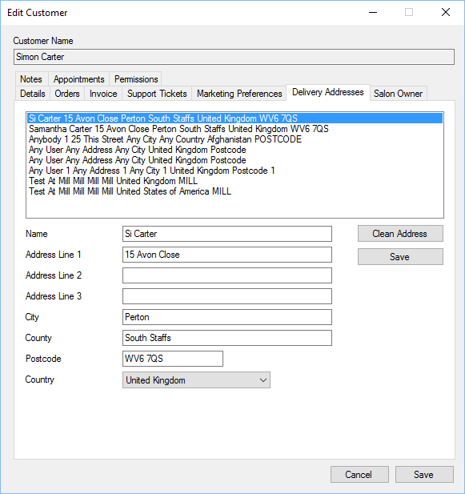

Delivery Address
Previous
Top
Next
You can view and edit delivery addresses within the POS.

Select the address you wish to view, once you have made changes, click the Save button next to Address Line 1 to save changes.